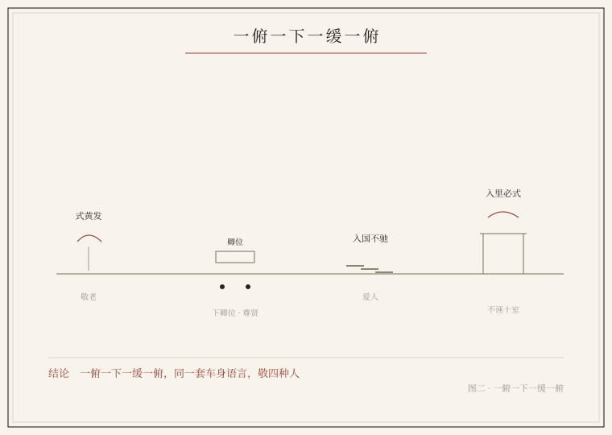

曲礼上 · 一·一百二十 · 第 118 课
四件事：见老人凭式，过卿位下车，入国都不得疾驰，入里巷必凭式。注指出此节带「故」字，是别篇旧礼杂辞。
说什么事：故君子式黄发，下卿位，入国不驰，入里必式。
落在哪一层：仪，兼及礼意。讲的是「在路上如何待人」。
为何编在此位：上节论物之界，此节论人之敬。界以分物，敬以待人。
【经】故君子式黃髮，下卿位，入國不馳，入里必式。
【注】敬老也。發句言「故」，明此眾篇雜辭也。尊賢也。卿位，卿之朝位也。君出過之而上車，入未至而下車。愛人也。馳，善藺人也。不誣十室。
黄发 疏「人初老则发白，太老则发黄，发黄弥老，宜敬之」。
下卿位 注「卿之朝位也」。疏引《论语·乡党》「过位，色勃如也」，注「过位谓入门右北面君揖之位」；「出则过卿位而上车，入则未到卿位而下车」。
入国不驰 注「爱人也。驰，善蔺人也」。疏「国中人多，若驰车则害人」；「善犹好也。蔺，雷剌也。若车驰则好行剌人也」。
入里必式 注「不诬十室」。疏「二十五家为里，里巷首有门，十室不诬，故入里则必式」；引《论语》「十室之邑，必有忠信如丘者焉」。
发句言故 注「明此众篇杂辞也」。疏「谓他篇上旧礼杂辞，连上至下，所以有故」。
所以君子见黄发老人则凭式，过卿之朝位则下车，进入国都则不疾驰，进入里巷则必凭式。
四句四个动作，皆在车上：一俯、一下、一缓、一俯。所敬者不同——老者、贤者、众人、十室——而所用的都是同一套车身语言。
第一层 式黄发 敬其年。疏「人君尚尔，则大夫士可知也」。
第二层 下卿位 敬其位。注辨出入之别：出时过位才上车，入时未至位先下车。同一个位，两个方向两种处置。
第三层 入国不驰 注「爱人也」，而疏解「蔺」字极狠：车驰则好行剌人。快，在这里被直接说成伤人。
第四层 入里必式 注「不诬十室」。二十五家的小巷，也要俯一俯。敬不以人数多少为准。
与今日何干 开车经过人多的地方慢一点，进小区门口松一脚油门。这四句里最不过时的一条，是「入国不驰」。
| 左 | 右 |
|---|---|
| 式黄发 | 敬老，发黄弥老 |
| 下卿位 | 尊贤，出过而上车，入未至而下车 |
| 入国不驰 | 爱人，驰则好行剌人 |
| 入里必式 | 不诬十室，敬不以人少而减 |
| 发句言「故」 | 众篇杂辞，非一时之作 |
画一条自左向右的路，分四段：第一段路旁立一位白发老人的剪影，车轼处有一道下压的弧线；第二段路面画一处朝位标记（一块方形石位），石位前后各有一双方向相反的脚印；第三段路面画两道被收窄的车辙，辙线密而短；第四段是一处里巷门，门楣下有一道下压的弧线。不写文字。赭色只用在两处下压的弧线上。
